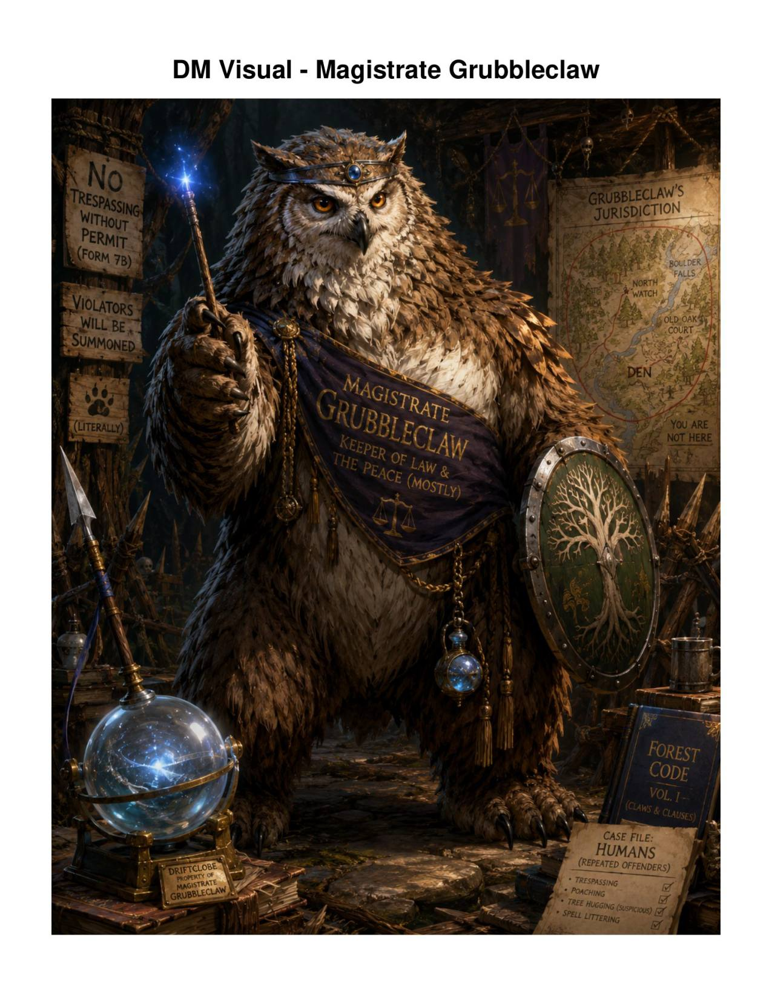

FREE STARTER · Complete adventure
The Lantern Below
The village lantern has gone dark. Recover the stolen Emberglass and decide what the old seal should become before moonrise.

99¢ ONE-SHOTS · PICK → OPEN → RUN
Complete adventures for busy DMs. Run from the browser with the next scene, checks, clues, maps, and consequences kept in front of you—or use the complete printable kit at the table.
Start with The Lantern Below—free and complete. More adventures are being table-tested now. Proven paid releases will be 99¢ and include browser play plus a complete downloadable print kit.
SPECIAL PLAYTEST BOXED SET · LEVEL 0 · 7 SESSIONS · 4–6 PLAYERS
This is the longer-form exception to the one-shot catalog. Start at age 12 with six 9s and no class, then grow up in Hearthcross across seven sessions of chores, dances, competitions, apprenticeship, travel, a storm, and graduation. Every important win and loss becomes part of the scrapbook that builds the Level-1 character.
Complete playtest kit · Not for sale · Level-0 homebrew ends at graduation, then the character hands off to the chosen 2014 or 2024 rules edition.
Choose tonight’s adventure
The Lantern Below is the permanent free starter. The rest of the catalog stays in playtest until it survives a real DM run, revision, delivery checks, and release review. Paid releases will be 99¢ each.
FREE STARTER · Complete adventure
The village lantern has gone dark. Recover the stolen Emberglass and decide what the old seal should become before moonrise.

Live · Free preview
Saltmere’s well still gives water, but the water has started taking names. Fix the bargain before the dusk bucket is drawn.
Playtest preview · Not for sale
A stolen birthday wish, forgotten celebration halls, puzzles, traps, six pregens, and a midnight finale where hope itself is on trial.
Live · Free preview
Briar Hollow is starving. The stolen egg is alive, its father is coming, and every solution creates a different consequence by dawn.
Live · Free preview
A corrupted grove, an endangered Heart Tree, and a druid who can be defeated or cleansed.
Live · Free preview
A flooded undercroft and failing civic ward turn the finale into a live three-station repair instead of a required boss fight.
Live · Free preview
Rescue a missing surveyor, uncover what the orchard is containing, then decide who receives one living wardstone shard.
Live · Free preview
Six civilians, two wagons, rising black water, and four points of bridge integrity create a live storm-rescue clock.
Live · Free preview
A drowned warning bell, a missing apprentice, rising water, and a ghost whose message changes what Oakhaven believes about its founders.

Free preview · PDF bundle
A genius owlbear claims the village's magic weapons as legal property. Raiders arrive at sundown. Bargain with the magistrate before the defenses are tested.
Original v1.1 review preview. Rules and hero references need revision before paid release.
New · Review preview
Three children vanish from a masked lantern parade after the town collects every doorstep's final sweet before midnight.
New · Review preview
A missing feast chair, a diverted grain wagon, and a harvest spirit test what sharing means when food is scarce.
New · Review preview
Wintermere opened its presents before the First Gift reached the isolated house beyond the snow road. Now the village hearths are going cold.
New · Review preview
Yearturn burned its old ledger at midnight, including obligations that were supposed to carry forward. Now the twelfth bell will not ring.
New · Review preview
Rosebridge kept only romantic ribbons in a festival that once honored every chosen bond. Now the Heartloom is pairing people by force.
New · Review preview
A jeweled replica replaced the spring First Egg that carried the village's pooled seed. Now sunrise is stuck on the horizon.
New · Review preview
Brightwater's seventh signal rocket points at a packed harbor after sabotage, reused military hardware, and buried safety warnings collide.
New · Review preview
Bellmere removed the blank lanterns for unnamed dead. Now a ghost road is carrying the forgotten back toward town.
New · Review preview
Ninefold Academy erased one student's grounding capstone from commencement. The ninth beacon opens a planar breach instead of sealing the observatory.
Coming after review · $0.99 target
New releases enter the catalog only after their table-readiness, clue, presentation, readability, and site gates are green.
Characters
Original level-4 SRD characters for the level-4 adventures. The Oakhaven modules are level-1 bring-your-own-character previews; their product pages and stage cards include role guidance.
The stage card is the prep.
12 pregens, 6 for a full party.
Hearthford remembers last Saturday.
Numbers, DCs, and talk-outs are on the card.